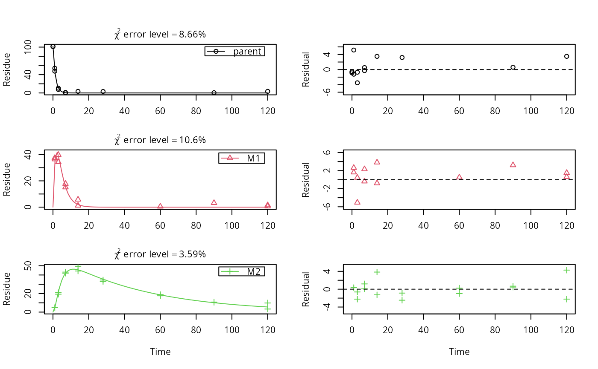

synthetic_data_for_UBA_2014.RdThe 12 datasets were generated using four different models and three different variance components. The four models are either the SFO or the DFOP model with either two sequential or two parallel metabolites.
Variance component 'a' is based on a normal distribution with standard deviation of 3, Variance component 'b' is also based on a normal distribution, but with a standard deviation of 7. Variance component 'c' is based on the error model from Rocke and Lorenzato (1995), with the minimum standard deviation (for small y values) of 0.5, and a proportionality constant of 0.07 for the increase of the standard deviation with y. Note that this is a simplified version of the error model proposed by Rocke and Lorenzato (1995), as in their model the error of the measured values approximates lognormal distribution for high values, whereas we are using normally distributed error components all along.
Initial concentrations for metabolites and all values where adding the variance component resulted
in a value below the assumed limit of detection of 0.1 were set to NA.
As an example, the first dataset has the title SFO_lin_a and is based on the SFO model
with two sequential metabolites (linear pathway), with added variance component 'a'.
Compare also the code in the example section to see the degradation models.
synthetic_data_for_UBA_2014A list containing twelve datasets as an R6 class defined by mkinds,
each containing, among others, the following components
titleThe name of the dataset, e.g. SFO_lin_a
dataA data frame with the data in the form expected by mkinfit
Ranke (2014) Prüfung und Validierung von Modellierungssoftware als Alternative zu ModelMaker 4.0, Umweltbundesamt Projektnummer 27452
Rocke, David M. und Lorenzato, Stefan (1995) A two-component model for measurement error in analytical chemistry. Technometrics 37(2), 176-184.
# \dontrun{
# The data have been generated using the following kinetic models
m_synth_SFO_lin <- mkinmod(parent = list(type = "SFO", to = "M1"),
M1 = list(type = "SFO", to = "M2"),
M2 = list(type = "SFO"), use_of_ff = "max")
#> Temporary DLL for differentials generated and loaded
m_synth_SFO_par <- mkinmod(parent = list(type = "SFO", to = c("M1", "M2"),
sink = FALSE),
M1 = list(type = "SFO"),
M2 = list(type = "SFO"), use_of_ff = "max")
#> Temporary DLL for differentials generated and loaded
m_synth_DFOP_lin <- mkinmod(parent = list(type = "DFOP", to = "M1"),
M1 = list(type = "SFO", to = "M2"),
M2 = list(type = "SFO"), use_of_ff = "max")
#> Temporary DLL for differentials generated and loaded
m_synth_DFOP_par <- mkinmod(parent = list(type = "DFOP", to = c("M1", "M2"),
sink = FALSE),
M1 = list(type = "SFO"),
M2 = list(type = "SFO"), use_of_ff = "max")
#> Temporary DLL for differentials generated and loaded
# The model predictions without intentional error were generated as follows
sampling_times = c(0, 1, 3, 7, 14, 28, 60, 90, 120)
d_synth_SFO_lin <- mkinpredict(m_synth_SFO_lin,
c(k_parent = 0.7, f_parent_to_M1 = 0.8,
k_M1 = 0.3, f_M1_to_M2 = 0.7,
k_M2 = 0.02),
c(parent = 100, M1 = 0, M2 = 0),
sampling_times)
d_synth_DFOP_lin <- mkinpredict(m_synth_DFOP_lin,
c(k1 = 0.2, k2 = 0.02, g = 0.5,
f_parent_to_M1 = 0.5, k_M1 = 0.3,
f_M1_to_M2 = 0.7, k_M2 = 0.02),
c(parent = 100, M1 = 0, M2 = 0),
sampling_times)
d_synth_SFO_par <- mkinpredict(m_synth_SFO_par,
c(k_parent = 0.2,
f_parent_to_M1 = 0.8, k_M1 = 0.01,
f_parent_to_M2 = 0.2, k_M2 = 0.02),
c(parent = 100, M1 = 0, M2 = 0),
sampling_times)
d_synth_DFOP_par <- mkinpredict(m_synth_DFOP_par,
c(k1 = 0.3, k2 = 0.02, g = 0.7,
f_parent_to_M1 = 0.6, k_M1 = 0.04,
f_parent_to_M2 = 0.4, k_M2 = 0.01),
c(parent = 100, M1 = 0, M2 = 0),
sampling_times)
# Construct names for datasets with errors
d_synth_names = paste0("d_synth_", c("SFO_lin", "SFO_par",
"DFOP_lin", "DFOP_par"))
# Original function used or adding errors. The add_err function now published
# with this package is a slightly generalised version where the names of
# secondary compartments that should have an initial value of zero (M1 and M2
# in this case) are not hardcoded any more.
# add_err = function(d, sdfunc, LOD = 0.1, reps = 2, seed = 123456789)
# {
# set.seed(seed)
# d_long = mkin_wide_to_long(d, time = "time")
# d_rep = data.frame(lapply(d_long, rep, each = 2))
# d_rep$value = rnorm(length(d_rep$value), d_rep$value, sdfunc(d_rep$value))
#
# d_rep[d_rep$time == 0 & d_rep$name %in% c("M1", "M2"), "value"] <- 0
# d_NA <- transform(d_rep, value = ifelse(value < LOD, NA, value))
# d_NA$value <- round(d_NA$value, 1)
# return(d_NA)
# }
# The following is the simplified version of the two-component model of Rocke
# and Lorenzato (1995)
sdfunc_twocomp = function(value, sd_low, rsd_high) {
sqrt(sd_low^2 + value^2 * rsd_high^2)
}
# Add the errors.
for (d_synth_name in d_synth_names)
{
d_synth = get(d_synth_name)
assign(paste0(d_synth_name, "_a"), add_err(d_synth, function(value) 3))
assign(paste0(d_synth_name, "_b"), add_err(d_synth, function(value) 7))
assign(paste0(d_synth_name, "_c"), add_err(d_synth,
function(value) sdfunc_twocomp(value, 0.5, 0.07)))
}
d_synth_err_names = c(
paste(rep(d_synth_names, each = 3), letters[1:3], sep = "_")
)
# This is just one example of an evaluation using the kinetic model used for
# the generation of the data
fit <- mkinfit(m_synth_SFO_lin, synthetic_data_for_UBA_2014[[1]]$data,
quiet = TRUE)
plot_sep(fit)

summary(fit)
#> mkin version used for fitting: 1.1.0
#> R version used for fitting: 4.1.2
#> Date of fit: Wed Mar 2 13:44:06 2022
#> Date of summary: Wed Mar 2 13:44:06 2022
#>
#> Equations:
#> d_parent/dt = - k_parent * parent
#> d_M1/dt = + f_parent_to_M1 * k_parent * parent - k_M1 * M1
#> d_M2/dt = + f_M1_to_M2 * k_M1 * M1 - k_M2 * M2
#>
#> Model predictions using solution type deSolve
#>
#> Fitted using 833 model solutions performed in 0.756 s
#>
#> Error model: Constant variance
#>
#> Error model algorithm: OLS
#>
#> Starting values for parameters to be optimised:
#> value type
#> parent_0 101.3500 state
#> k_parent 0.1000 deparm
#> k_M1 0.1001 deparm
#> k_M2 0.1002 deparm
#> f_parent_to_M1 0.5000 deparm
#> f_M1_to_M2 0.5000 deparm
#>
#> Starting values for the transformed parameters actually optimised:
#> value lower upper
#> parent_0 101.350000 -Inf Inf
#> log_k_parent -2.302585 -Inf Inf
#> log_k_M1 -2.301586 -Inf Inf
#> log_k_M2 -2.300587 -Inf Inf
#> f_parent_qlogis 0.000000 -Inf Inf
#> f_M1_qlogis 0.000000 -Inf Inf
#>
#> Fixed parameter values:
#> value type
#> M1_0 0 state
#> M2_0 0 state
#>
#> Results:
#>
#> AIC BIC logLik
#> 188.7274 200.3723 -87.36368
#>
#> Optimised, transformed parameters with symmetric confidence intervals:
#> Estimate Std. Error Lower Upper
#> parent_0 102.1000 1.57000 98.8600 105.3000
#> log_k_parent -0.3020 0.03885 -0.3812 -0.2229
#> log_k_M1 -1.2070 0.07123 -1.3520 -1.0620
#> log_k_M2 -3.9010 0.06571 -4.0350 -3.7670
#> f_parent_qlogis 1.2010 0.23530 0.7216 1.6800
#> f_M1_qlogis 0.9589 0.24890 0.4520 1.4660
#> sigma 2.2730 0.25740 1.7490 2.7970
#>
#> Parameter correlation:
#> parent_0 log_k_parent log_k_M1 log_k_M2 f_parent_qlogis
#> parent_0 1.000e+00 3.933e-01 -1.605e-01 2.819e-02 -4.624e-01
#> log_k_parent 3.933e-01 1.000e+00 -4.082e-01 7.166e-02 -5.682e-01
#> log_k_M1 -1.605e-01 -4.082e-01 1.000e+00 -3.929e-01 7.478e-01
#> log_k_M2 2.819e-02 7.166e-02 -3.929e-01 1.000e+00 -2.658e-01
#> f_parent_qlogis -4.624e-01 -5.682e-01 7.478e-01 -2.658e-01 1.000e+00
#> f_M1_qlogis 1.614e-01 4.102e-01 -8.109e-01 5.419e-01 -8.605e-01
#> sigma -2.900e-08 -8.030e-09 -2.741e-08 3.938e-08 -2.681e-08
#> f_M1_qlogis sigma
#> parent_0 1.614e-01 -2.900e-08
#> log_k_parent 4.102e-01 -8.030e-09
#> log_k_M1 -8.109e-01 -2.741e-08
#> log_k_M2 5.419e-01 3.938e-08
#> f_parent_qlogis -8.605e-01 -2.681e-08
#> f_M1_qlogis 1.000e+00 4.971e-08
#> sigma 4.971e-08 1.000e+00
#>
#> Backtransformed parameters:
#> Confidence intervals for internally transformed parameters are asymmetric.
#> t-test (unrealistically) based on the assumption of normal distribution
#> for estimators of untransformed parameters.
#> Estimate t value Pr(>t) Lower Upper
#> parent_0 102.10000 65.000 7.281e-36 98.86000 105.30000
#> k_parent 0.73930 25.740 2.948e-23 0.68310 0.80020
#> k_M1 0.29920 14.040 1.577e-15 0.25880 0.34590
#> k_M2 0.02023 15.220 1.653e-16 0.01769 0.02312
#> f_parent_to_M1 0.76870 18.370 7.295e-19 0.67300 0.84290
#> f_M1_to_M2 0.72290 14.500 6.418e-16 0.61110 0.81240
#> sigma 2.27300 8.832 2.161e-10 1.74900 2.79700
#>
#> FOCUS Chi2 error levels in percent:
#> err.min n.optim df
#> All data 8.454 6 17
#> parent 8.660 2 6
#> M1 10.583 2 5
#> M2 3.586 2 6
#>
#> Resulting formation fractions:
#> ff
#> parent_M1 0.7687
#> parent_sink 0.2313
#> M1_M2 0.7229
#> M1_sink 0.2771
#>
#> Estimated disappearance times:
#> DT50 DT90
#> parent 0.9376 3.114
#> M1 2.3170 7.697
#> M2 34.2689 113.839
#>
#> Data:
#> time variable observed predicted residual
#> 0 parent 101.5 1.021e+02 -0.56248
#> 0 parent 101.2 1.021e+02 -0.86248
#> 1 parent 53.9 4.873e+01 5.17118
#> 1 parent 47.5 4.873e+01 -1.22882
#> 3 parent 10.4 1.111e+01 -0.70773
#> 3 parent 7.6 1.111e+01 -3.50773
#> 7 parent 1.1 5.772e-01 0.52283
#> 7 parent 0.3 5.772e-01 -0.27717
#> 14 parent 3.5 3.264e-03 3.49674
#> 28 parent 3.2 1.045e-07 3.20000
#> 90 parent 0.6 9.530e-10 0.60000
#> 120 parent 3.5 -5.940e-10 3.50000
#> 1 M1 36.4 3.479e+01 1.61088
#> 1 M1 37.4 3.479e+01 2.61088
#> 3 M1 34.3 3.937e+01 -5.07027
#> 3 M1 39.8 3.937e+01 0.42973
#> 7 M1 15.1 1.549e+01 -0.38715
#> 7 M1 17.8 1.549e+01 2.31285
#> 14 M1 5.8 1.995e+00 3.80469
#> 14 M1 1.2 1.995e+00 -0.79531
#> 60 M1 0.5 2.111e-06 0.50000
#> 90 M1 3.2 -9.670e-10 3.20000
#> 120 M1 1.5 7.670e-10 1.50000
#> 120 M1 0.6 7.670e-10 0.60000
#> 1 M2 4.8 4.455e+00 0.34517
#> 3 M2 20.9 2.153e+01 -0.62527
#> 3 M2 19.3 2.153e+01 -2.22527
#> 7 M2 42.0 4.192e+01 0.07941
#> 7 M2 43.1 4.192e+01 1.17941
#> 14 M2 49.4 4.557e+01 3.83353
#> 14 M2 44.3 4.557e+01 -1.26647
#> 28 M2 34.6 3.547e+01 -0.87275
#> 28 M2 33.0 3.547e+01 -2.47275
#> 60 M2 18.8 1.858e+01 0.21837
#> 60 M2 17.6 1.858e+01 -0.98163
#> 90 M2 10.6 1.013e+01 0.47130
#> 90 M2 10.8 1.013e+01 0.67130
#> 120 M2 9.8 5.521e+00 4.27893
#> 120 M2 3.3 5.521e+00 -2.22107
# }